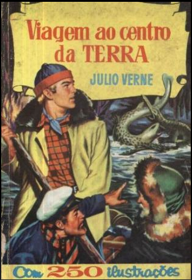
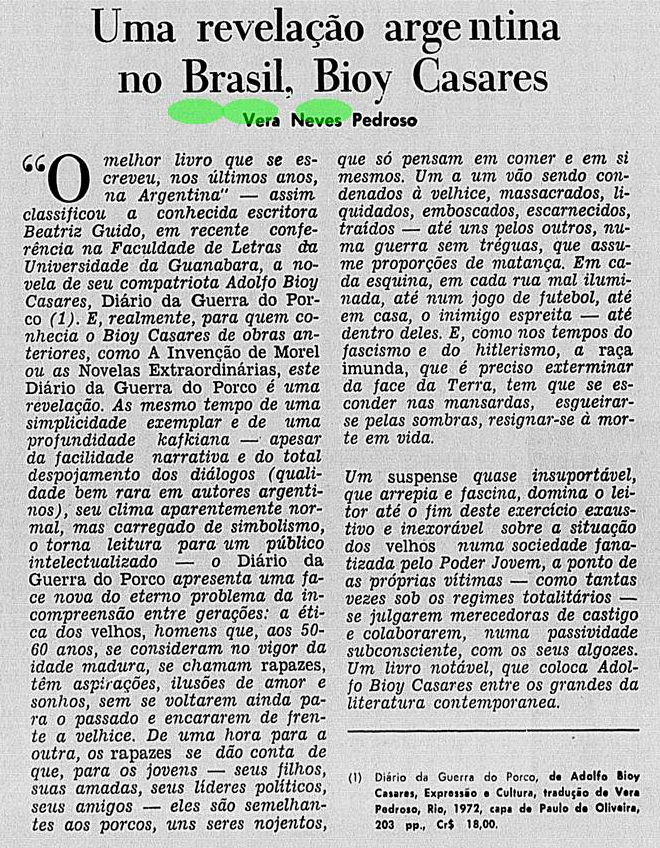
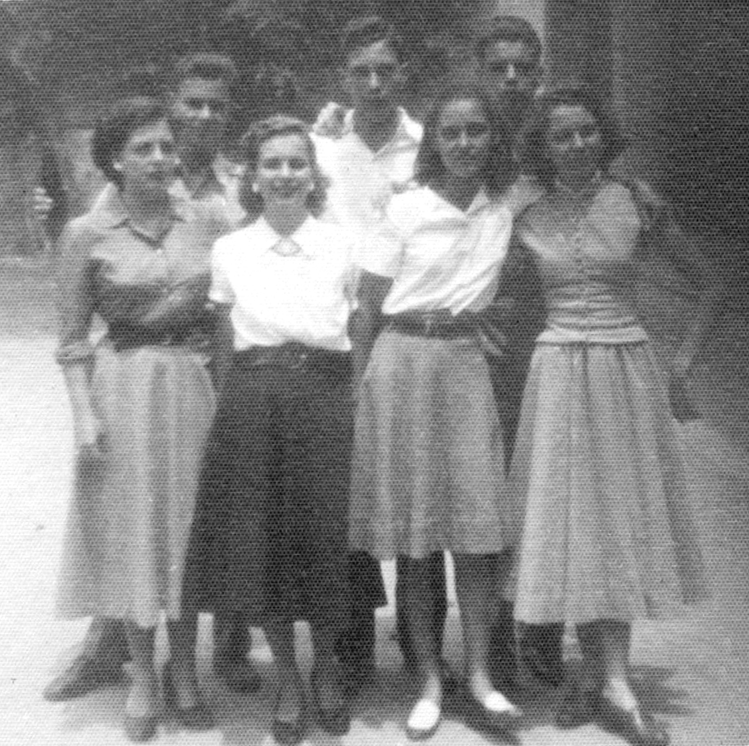
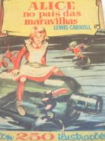

Jorge Furtado


No dia 22 de março de 2010 escrevi e publiquei neste blog o seguinte texto: Quem é Primavera das Neves?
Sou fascinado pelo nome desta tradutora brasileira: Primavera das Neves. Tenho uma edição de sua tradução dos dois livros de Lewis Carroll, “Alice no país das maravilhas” e “Através do espelho”, muito boas, Editorial Bruguera, Rio de Janeiro, infelizmente sem data.
Fui procurar mais informações sobre ela no Google e, pasmem, encontrei apenas uma referência, uma raridade.
(Experimente. Acho que nunca encontrei apenas uma referência a qualquer pessoa que procurei no Google, ou não há referência alguma – e talvez a pessoa não exista ou você escreveu o nome errado – ou há muitas referências. Só uma?)
Pesquisa no Google, em 25.01.10:
http://www.google.com.br/search?hl=pt-BR&source=hp&q="primavera+das+neve...
Viagem ao Centro da Terra, Julio Verne
Tradutor: Primavera das Neves. Editora: Editorial Brugera, RJ. Ano: 1963. Nº de páginas: 256. Medidas: 13 x 19. Peso: 270 gramas. Encadernação: Capa dura ...
http://www.traca.com.br/livro/70088/viagem-ao-centro-da-terra
Quem foi Primavera das Neves, tradutora de Carroll e de Julio Verne? Seria um pseudônimo? Alguém já ouviu falar dela?
Uma hipótese, colaboração de Giba Assis Brasil: Primavera das Neves seria um heterônimo eventual da tradutora Vera Neves Pedroso (esta, com muitas referências no Google).
Quem souber, por favor, me avise.
http://www.casacinepoa.com.br/o-blog/jorge-furtado/quem-é-primavera-das-neves

X
Ninguém soube de nada desde então ou soube e não me avisou. Hoje, quase três anos depois, graças a espetacular hemeroteca da Biblioteca Nacional, encontrei Primavera das Neves.
Valeu a pena seguir procurando. Primavera das Neves foi uma exilada portuguesa, seu marido era opositor a ditadura salazarista. Além de ser anti-salazarista e tradutora de Carroll, Primavera das Neves era muito bonita.
O nome completo dela era Primavera Ácrata Saiz das Neves, esposa do Capitão Manuel Pedroso Marques (1), um dos 13 militares portugueses que tentaram derrubar a ditadura salazarista na revolta de Beja, na noite de 31 de dezembro de 1961. Primavera estava recém casada, tinha uma filha de poucos meses, Alexandra, quando seu marido participou do assalto ao quartel de Beja, no Alentejo (2). Manuel, com outros revolucionários, passou mais de um ano e meio exilado na embaixada do Brasil em Lisboa. A revolta foi uma fracasso mas marcou o início do fim da ditadura portuguesa.
No jornal Correio da Manhã (RJ) de 13 de setembro de 1962 , uma pequena nota informa:
Representações pró-asilados vão a ministro
O gen. Humberto Delgado entregou ao ministro Afonso Arinos, representações do Movimento Nacional Independente (Guanabara) e a União Democrática Portuguesa (São Paulo) a respeito dos asilados políticos na Embaixada do Brasil. Os documentos apoiam diligências realizadas pelo general e pelos brasileiros que se dirigiram, no mesmo sentido, ao ministro. O MNI informa que o PIDE (3) fez desembarcar a ex-exilada Primavera das Neves Pedroso, esposa do Cap. Pedroso, acusado de participação na revolta de Beja. “Esta senhora” diz o MNI, “acreditando nas promessas da polícia ao embaixador Negrão de Lima, deixara a embaixada e metera-se num navio rumo ao Brasil. Meia hora antes proibiram-lhe a partida, embora estivesse munida do respectivo passaporte, visado pelo consulado brasileiro”.
http://memoria.bn.br/DocReader/DocReader.aspx?bib=089842_07&PagFis=32614
Na página 4 do jornal A Noite (RJ), na edição de 12 de junho de 1963, há uma matéria com duas fotos:
CHEGOU AO BRASIL A EXILADA PORTUGUESA D. PRIMAVERA E FILHINHA
A bordo do navio inglês “Amazon” chegou ontem à Guanabara a exilada portuguesa Sra. Primavera das Neves, esposa do capitão José Pedroso Marques, um dos chefes da fracassada revolta anti-salazarista de Beja. A recém-chegada, que viajara acompanhara a sua filha de dois anos, mostrava-se nervosa com a presença de repórteres, negando-se a prestar qualquer declaração. Seu marido permaneceu na embaixada brasileira em Lisboa, esperando pela decisão do governo português. Dona Primavera, que já residiu durante alguns anos no Rio de Janeiro, chegando a ser diretora da Revista Cinelândia, trazia o medo estampado no rosto. O Sr. Roberto Neves, seu pai, adiantou à reportagem que era comum a todos que chegavam de Portugal, foragidos, aquele medo de falar, demonstrado por sua filha. Mesmo no Brasil, acrescentou, a PIDE age, pois, certa vez, a editora Germinal, fundada por ele para esclarecer a verdade dos fatos a respeito da ditadura que sufoca o seu país, teria sido incendiada por elementos desta organização. O senhor Roberto Neves mostrava-se radiante com a chegada da filha e da netinha, mas nem por isso descurava-se da defesa de suas idéias. Nas fotos, Dona Primavera descendo a escada do “Amazon”, com sua filhinha e o grupo formado pela esposa do capitão Marques, Sr. Roberto Neves e a netinha deste último.
http://memoria.bn.br/DocReader/DocReader.aspx?bib=348970_06&PagFis=8497
A edição do Jornal do Brasil do mesmo dia, 12.06.63, na página 10, traz uma grande e bonita foto de Primavera e sua filha e uma matéria com o título:
Dona Primavera chega sem falar em política para não complicar asilo do marido.
Dona Primavera Acrata Saiz das Neves, esposa do capitão Manuel Pedroso Marques, um dos 13 revolucionários portugueses asilados há cerca de um ano e seis meses na Embaixada do Brasil em Lisboa chegou ontem, à Guanabara, pelo navio inglês Amazon, acompanhada por sua filhinha Alexandra. Embora venha sofrendo há quase dois anos, retida em Portugal pela polícia salazarista, “cumprindo um período de observação” e só podendo ver o esposo quinzenalmente, em visita de uma hora, Dona Primavera, ex-jornalista e criada no Brasil, está em casa de seus pais, em Ipanema, onde pretende aguardar com mais tranquilidade a solução dos dois países quanto a vinda do Capitão Pedroso.
http://news.google.com/newspapers?nid=1246&dat=19630611&id=vMoRAAAAIBAJ&sjid=TO4DAAAAIBAJ&pg=4969,2359025
Em 2012 comemorou-se os 50 anos da Revolta de Beja. Manuel Pedroso Marques, marido de Primavera, estava entre os presentes. (4)
x
Em agosto de 1957 Primavera ficou sócia do Museu de Arte Moderna do Rio de Janeiro.
http://memoria.bn.br/DocReader/DocReader.aspx?bib=089842_06&PagFis=79995
Em dezembro de 1957 ela se formou em letras pela Universidade Federal do Brasil.
http://memoria.bn.br/DocReader/DocReader.aspx?bib=089842_06&PagFis=56753
Entre 1957 e 1961 ela foi para Portugal, onde se casou com Manuel Pedroso Marques e teve sua filha, Maria Alexandra.
Em março de 1962 Primavera está exilada, com o marido, na embaixada brasileira em Lisboa.
http://memoria.bn.br/DocReader/DocReader.aspx?bib=093718_04&PagFis=19910
x
Primavera voltou para o Brasil, com a filha, fugindo de uma ditadura cruel, e viu o país cair, em pouco mais de um ano, nas mãos de uma ditadura cruel. É compreensível que tenha preferido trocar seu belo nome para Vera Neves Pedroso. E foi com este nome que ela se tornou uma importante tradutora, tem em seu currículo (além das Alices de Carroll) traduções de Emily Bronte (O Morro dos ventos Uivantes), Adolfo Bioy Casares (A Invenção de Morel), Vladimir Nabokov (Transparências, 1973), Georges Simenon (As Férias de Maigret), Lawrence Durrell (Tune, 1969), John Le Carré, Julio Verne, Arthur Clark.
x
Atualizado em 17.03.13
A tradutora Denise Bottmann, do site “Não gosto de plágio”, encontrou a ficha de Vera Neves Pedroso na Biblioteca Nacional com a informação de que Primavera Ácrata Saiz das Neves nasceu em 1933 e morreu em 1981, aos 48 anos.
Pedroso, Vera Neves, 1933-1981.
Neves, Primavera Ácrata Saiz das, 1933-1981.
Saiz das Neves, Primavera Ácrata, 1933-1981.
Sec. de: Uris, Leon M. Exodus. 1981.
Em: Simenon, Georges. As férias de Maigret.
http://naogostodeplagio.blogspot.com.br/2013/03/primavera-das-neves-vera...
X
x
Atualizado em 17.03.13, 19:46
Recebo e-mail do amigo Ivo Barroso, com mais notícias sobre Primavera da Neves.
Caro Jorge,
Só hoje, via Denise Bottmann, fiquei sabendo de sua detetivesca procura pela Primavera. E não é que a tive sob meu encargo de revisor de traduções da Enciclopédia Delta, quando assessorava o Antônio Houaiss (v. meu blog) nos anos 60! Ela ainda se chamava Primavera e como o nome soasse meio cafona para as meninas avançadas nossas colaboradoras à época, acabou sendo Vera Pedroso. (O marido, anos depois também colaborou na Enciclopédia, escrevendo ou revisando verbetes relacionados a Portugal). Lembro-me dela, não era bonita, mas tinha feições nobres, muito tímida (em relação às nossas "liberadas" colaboradoras); a boca parecia rasgada demais e tinha um sorriso triste, mas encantava pela voz educada de inflexão lisboeta.
Os revolucionários e exilados portugueses encontravam trabalho aqui graças ao Lacerda (na Nova Fronteira, creio que ela traduziu alguns livros para lá) e junto ao Houaiss, onde quer que ele estivesse. Logo após a edição da Enciclopédia (1972), fui para Lisboa e lá fiquei por algum tempo, mas nunca mais soube do casal. Sei que o capitão-marido voltou a Portugal com a revolução dos Cravos e ocupou altos cargos no Governo.
O mundo é realmente pequeno.
Abraços sempre shakespearianos,
Ivo Barroso
x
Atualizado em 18.03.13
Encontrei referências à filha Maria Alexandra Saiz das Neves Pedroso no Rio de Janeiro em 1992. Parece que Primavera e a filha ficaram no Brasil.
Encontrei também um texto dela, assinado Vera Neves Pedroso, sobre um livro de Bioy Casares.

O pai de Primavera das Neves era o poeta português Roberto das Neves, anti-salazarista exilado no Brasil. Poeta, professor e maçom, Roberto das Neves foi diretor, no Brasil, da Editora Germinal. Encontrei, nas edições de 21 e 23 de julho de 1953 do Diário de Notícias (RJ), uma referência ao trabalho dele no Brasil e sua denúncia da censura aos livros no regime salazarista.
http://memoria.bn.br/DocReader/DocReader.aspx?bib=093718_03&PagFis=25775
http://memoria.bn.br/DocReader/DocReader.aspx?bib=093718_03&PagFis=25859
Aqui, uma matéria sobre o pai de Primavera, o poeta, escritor, editor português, anarquista, vegetariano e maçom, Roberto das Neves.
http://marquesdacosta.files.wordpress.com/2011/12/emece_19.pdf
Aqui, no blog do irmão de Primavera, Roberto Neves (filho), uma entrevista de Roberto das Neves (pai) à revista Planeta.
betodasneves.multiply.com/tag/roberto%20das%20neves
No site de Roberto Neves, filho do segundo casamento de Roberto das Neves, encontro esta nota bio-bibliográfica, escrita por Manuel Pedroso Marques, marido de Primavera, que faz referências a ela e sua filha Maria Alexandra. A mãe de Primavera se chamava Maria Jesusa Saiz y Diaz. Primavera das Neves nasceu em Pedrógão Grande, Portugal, e sua filha Maria Alexandra faleceu, muito jovem.
x
Roberto das Neves (nota bio-bibliográfica, por Manuel Pedroso Marques)
Roberto das Neves, cidadão do mundo, nascido em Pedrógão Grande, terra de onde resguardava as memórias das gentes e das paisagens que nunca esqueceu ao longo de toda a sua vida. Anarquista que o acontecimento de 25 de Abril deixou tão feliz que, como então escrevia a um amigo, "quase chegou a cometer o perjúrio de se sentir patriota".
Treze vezes preso por motivos políticos (onze em Portugal e duas no Brasil), foi poucas vezes julgado e nunca condenado. Individualista fascinado pela criação da inteligência dos outros; solidário em extremo com os seus companheiros de ideias.
(...)
O percurso da vida de Roberto das Neves começa em Pedrógão Grande, no dia 7 de Setembro de 1907 e, quando chega a altura do liceu, em Coimbra, onde os seus pais residiam, com mais cinco filhos. Freqüenta os primeiros anos da licenciatura em Ciências Histórico-Filosóficas. Foi dos primeiros estudantes a serem presos a seguir ao "28 de Maio", juntamente com Vasco da Gama Fernandes, seu colega e amigo. Foi-o várias outras vezes. Em 1927 é preso por andar a distribuir panfletos de sua autoria propagando os ideais anarquistas. Dois anos depois é novamente preso como director do jornal "A Egualdade" ligado à Federação Regional dos Anarquistas do Norte. Em 1930, é mais uma vez preso, acusado de divulgar ideias subversivas (…), sendo ferido e preso numa manifestação popular, em Lisboa, no Campo Santana.
Espanha – Passados alguns anos (e mais algumas prisões), já como jornalista de "O Primeiro de Janeiro", vai para Espanha (1931), interrompendo o seu curso, em Coimbra, cujas praxes académicas haviam merecido o seu repúdio expresso, pelo espírito "conservador e alcoólico" que as caracterizava.
Em Madrid liga-se ao movimento anarquista espanhol, ajuda na reestruturação da Federação Anarquista de Portugueses Exilados e escreve no jornal "Rebelião", órgão oficial desta organização. Aqui, conviveu com outros portugueses que lá se encontravam exilados, como Jaime Cortesão, Jaime de Morais e Alberto Moura Pinto, e ainda o Coronel Velez Caroço entre outros. Os três primeiros (os “Budas” como na oposição eram chamados) viria a encontrar mais tarde, no Brasil, para onde fora em 1942.
Vive das crónicas madrilenas e dos artigos que envia para aquele jornal portuense, na altura, um dos melhores do país. Mas o pagamento era pouco e irregular. Quando o dinheiro atrasava para pagar a pensão, algumas vezes dormiu enrolado na sua capa, que conservara de estudante de Coimbra, no jardim de O Retiro, no centro de Madrid, em cuja situação conhece uma jovem atraída por "um homem bonito que se via logo que não era vagabundo"… e com quem vem a casar e a ter uma filha que viera a nascer também em Pedrógão Grande.
(Vinte e seis anos depois, eu e esta sua filha, Primavera, viríamos a casar e a ter a nossa filha Maria Alexandra. Nenhuma pode ler estas linhas. Faleceram. Muito cedo.)
(...)
Durante a Guerra Civil de Espanha, quando as forças republicanas já se encontravam em desvantagem, começaram a aparecer em Portugal muitos refugiados espanhóis, clandestinos. Franco e Salazar estabeleceram uma “entente” que se traduzia na entrega dos refugiados que fossem presos às forças franquistas e em deixar em liberdade os que tivessem conseguido obter documentos junto da embaixada do México, em Lisboa, até que fossem transferidos para aquele país longínquo, o que aconteceu por duas vezes, com o afretamento de um navio de passageiros que levou mais de dois mil republicanos espanhóis. Neste período, a mulher de Roberto das Neves, Maria Jesusa Saiz y Diaz, andava acompanhada de uma das suas amigas, muitas vezes a Berta Mendes, mulher do escritor Manuel Mendes, pelas ruas da baixa de Lisboa, a falar espanhol ostensivamente alto… para que algum refugiado se aproximasse a pedir auxílio. Assim conseguiu esconder em casa dezenas de pessoas, até que Roberto das Neves entrava em contacto com a embaixada, com as fotografias, para obter o passaporte e as pessoas pudessem esperar em liberdade a sua transferência para o México.
(Quase trinta anos depois, um destes lê num jornal de Caracas que um “capitão português, genro de Roberto das Neves, se encontrava em asilo político diplomático na Embaixada do Brasil em Lisboa”. O capitão era eu. Recebo uma carta dando-me solidariedade e transportando um cheque com a quantia que um então velho professor de matemática e ex-oficial do Exército republicano espanhol podia dispor.)
Brasil. Editora Germinal – Durante a 2ª Grande Guerra, Roberto das Neves emigra para o Brasil, com a mulher e a filha, passando a viver no Rio de Janeiro. Arranja trabalho em alguns jornais, de início, mas a sua vida de trabalho vem centrar-se na editora Germinal e no Instituto de Pesquisas Grafológicas. A actividade editorial caracteriza-se pela divulgação das suas ideias anarquistas, de concepção de vida e saúde e, indefectivelmente, pela oposição ao regime de Salazar.
(...)
No início da década de sessenta Roberto das Neves casa pela segunda vez com uma antiga aluna de Esperanto, Maria Angélica de Oliveira de quem tem um filho, que vive no Rio de Janeiro e também se chama Roberto das Neves e que tem três filhos. Roberto das Neves morreu em 28 de Setembro de 1981.
Texto integral em:
http://betodasneves.multiply.com/tag/roberto%20das%20neves
xx
Segundo a entrevista do Coronel Manuel Pedroso Marques ao jornal A Comarca, em 14.01.12, depois de permanecer 2 anos e sete meses exilado na embaixada do Brasil em Lisboa, ele conseguiu fugir e chegar a França, onde permaneceu por um ano , até conseguir o visto para ir ao Brasil para encontrar sua esposa Primavera e a filha Alexandra, então com 5 anos.
http://pt.scribd.com/doc/79327499/A-Comarca-n-º-379-14-de-janeiro-de-2012
xx
A tradutora Denise Bottmann em seu site "Não gosto de plágio", está sendo processada pela Editora Landmak por ter denunciado o plágio (!!) da tradução de Primavera das Neves (assinada Vera Neves Pedroso) de "O Morro dos Ventos Uivantes", de Emile Brontë. Denise informa que "finalmente, saiu o laudo em janeiro ou fevereiro deste ano, o perito deu sua conclusão de 88% de plágio".
http://naogostodeplagio.blogspot.com.br/2009/01/landmark-pegou-gosto-pel...
xx
01.04.13: Primavera das Neves no Google: 8.160 citações.
11.04.13: Primavera das Neves no Google: 24.300
xx
Atualizado em 11.04.13
Escreve-se para um leitor imaginário, ("Arte requer comunhão", Stravinsky), de preferência para muitos leitores imaginários (arte é também ganha-pão), mas um só leitor atento vale um texto. E alguns leitores valem ter-se um dia imaginado escrever um texto.
É o caso da leitora que chegou a este blog, Eulalie Ligneul, e me mandou este belíssimo e-mail sobre sua amiga, Primavera das Neves. Pedi e ela autorizou a publicação, o que muito agradeço.
x
Jorge Furtado:
Ontem, em minhas insônias, encontrei seu blog no Google, por acaso, quando buscava o nome de minha amiga Primavera Sáiz das Neves – como a conheci no Colégio Franco Brasileiro (Lycée Français) no Rio. Fomos colegas de classe durante cinco anos. Foi um privilégio conhecê-la e considerá-la uma de minhas maiores amigas. Morreu muito cedo e não foi fácil perdê-la. Em 8 de março deste ano, 2013, ela completaria 80 anos.
Gostava de gatos. Teve alguns. Amava as flores, sobretudo as violetas, que usava, muitas vezes em pequenos ramos, sobre o vestido, ou blusa, bem colocadas, ficavam-lhe bem. Fazia poesias, muito bonitas. Certa vez, foi elogiada por Drummond. Não soube por ela, mas por sua mãe, Maria de Jesus.
Tenho cartas que me escreveu, de Portugal, quando se casou, com letra bonita e inconfundível.
Ouvia música como nunca mais encontrei ninguém. Seus comentários após os concertos, em muitas ocasiões – íamos juntas ou em grupos com outros amigos – coincidiam com as opiniões de Edino Krieguer, reconhecido crítico musical que mantinha uma coluna especializada. Era entusiasmada com Wagner! Apesar de não tocar nenhum instrumento, se poderia dizer que era entendida em música, como em literatura, a “sua praia”.
Falava pouco. Modesta, discreta, inteligente, sutil e muito engraçada, irônica mas, boa e sobretudo, muito original. No tempo em que todos frisavam os cabelos, Primavera os trazia lisos, absolutamente lisos o que a fazia diferente, chamava a atenção e ficava-lhe bem. Um dia me disse: “não sou bonita, mas serei sempre elegante...” Na verdade era muito elegante. Sensível ao extremo e sobretudo brilhante. No colégio destacou-se sempre e me lembro que obteve primeiro lugar num concurso de redação, organizado pela Caixa Econômica que lhe deu direito ao curso dos três anos após o ginásio, sem ônus para seus pais.
Na infância, em Portugal, seus primeiros passos escolares foram na Escola João de Deus, o autor da célebre cartilha. Quando chegou ao Brasil, tinha 9 anos e daqui saiu quando se casou, tendo voltado novamente na época dos acontecimentos já relatados em seu blog.
Estudou na Universidade Federal do Rio de Janeiro, Línguas Germânicas. Escrevia e falava correntemente, várias línguas, sobretudo o espanhol – língua materna – e o inglês que aprimorou na Cultura Inglesa, com todos os cursos e diplomas da época.
Era boa amiga. Não tinha religião e sendo eu católica, sempre me respeitou. No colégio ficou ao meu lado quando certo professor, muito amado pelos alunos, fazia críticas à religião católica, com o aplauso da maioria dos alunos. Nossa amizade envolveu também nossas famílias e freqüentávamos a casa uma da outra.
Você não pode imaginar ou pode? Que alegria foi encontrar alguém que a redescobriu. O tempo passa e quantos valores são esquecidos!
Muitas vezes fui ao Google para resgatar suas traduções. E pensava: como Primavera pode ficar esquecida! De fato, ela não era uma pessoa preocupada em promover-se.
Ao ler seus comentários e saber de sua curiosidade nascida da admiração de seu trabalho como tradutora e pelo nome inusitado de minha amiga, fiquei bastante emocionada e não resisti em lhe escrever. Falar de pessoas que nos são queridas faz bem. É como se as tocássemos de novo, é como se estivessem vivas outra vez, neste mundo.
Respeitosamente, Eulalie.
x

"No pátio do Liceu, em dia de prova. O ano é de 1948. Primavera é a terceira e eu estou ao lado dela na ponta direita. Destas quatro moças, só eu estou por aqui... para contar essa história".
x
Primavera das Neves, tradutora, jornalista, escritora e poeta portuguesa.
Primavera Ácrata Saiz das Neves, nascida em Pedrógão Grande, Portugal, em 08.03.1933, e falecida em 1980, no Rio de Janeiro. Filha do poeta, editor, político, maçom, naturalista, anarquista, o português Roberto das Neves, e da sufragista espanhola Maria de Jesus Saiz y Dias. Casada (em 1959) com o Capitão Manuel Pedroso Marques, revolucionário português, anti-salazarista, participante da Revolta de Beja, (1961) com quem teve uma filha, Maria Alexandra (1960-2005).
No Brasil, tradutora de Lewis Carroll (Alice no país das maravilhas e Através do espelho e o que Alice encontrou lá), Emily Bronte (O Morro dos ventos Uivantes), Adolfo Bioy Casares (A Invenção de Morel), Vladimir Nabokov (Transparências), Georges Simenon (As Férias de Maigret), Lawrence Durrell (Tune), John Le Carré, Julio Verne, Arthur Clark e outros.
x

x
Atualizado em 25.04.13
Em minha busca por Primavera das Neves, encomendei cinco livros traduzidos por ela.
"Mistério e solidão, a vida e a obra de Emily Dickinson", de Thomas H. Johnson, Editora Lidador, 1965, Rio de Janeiro. Aqui ela assina Vera das Neves Pedroso. Na biografia, muitos poemas, traduzidos por Primavera, e com o texto original em pé de página.
"Poetas americanos famosos", de Laura Benet, um conjunto de biografias de grandes poetas americanos, incluindo Edgar Alan Poe, Walt Whitman e Emily Dickinson. Editora Lidador, 1965, Rio de Janeiro. Aqui ela assina Vera Neves Pedroso.
"Contos de Andersen", com ilustrações, da Bruguera, um livro semelhante ao do Alice, uma engenhosa mistura de quadrinhos e texto integral da obra. Este livro é de 1966 e ela assinou Vera Neves Pedroso. No livro de Carroll, sem data e provavelmente anterior, a assinatura é Primavera das Neves.
"A Máquina fantástica", estranho título para a "La invencion de Morel", do argentino Adolfo Bioy Casares, Editora Expressão e Cultura, 1974, Rio de Janeiro. Além do engenhoso enredo da novela (que virou filme, ruim, uma foto dele está na capa), o interesse do livro aumenta pelo extraordinário prefácio de Jorge Luis Borges, aquele onde ele defende a primazia das tramas sobre os romances psicológicos. Um trecho:
"Os russos e seus discípulos demonstraram até a saciedade que ninguém é impossível: suicidas por felicidade, assassinos por benevolência, pessoas que se adoram a ponto de se separarem para sempre, delatores por fervor ou por humildade… Essa liberdade plena acaba equivalendo à desordem mais completa. Por outro lado, a novela “psicológica” quer ser, também, novella “realista”: prefere que esqueçamos seu caráter artificial verbal e faz de toda vã precisão (ou toda lânguida imprecisão) um novo toque verossímil.”
Jorge Luis Borges, prefácio de A Invenção de Morel, de Adolfo Bioy Casares. Tradução de Primavera das Neves.
(A tradução é boa, mas prefiro a de Josely Vianna Baptista, nas Obras Completas da Editora Globo.)
Pra mim, a grande revelação, entre os livros traduzidos por Primavera foi “Transparências”, de Vladimir Nabokov, uma novela curta com um começo tão arrebatador que me dei o trabalho de transcrever todo o primeiro capítulo, aqui vai:
Transparências, de Vladimir Nabokov.
Capítulo 1
Eis a pessoa que eu quero. Ei, pessoa! Ela não me ouve.
Se o futuro existisse, concreta e individualmente, como algo que pudesse ser discernido por uma mente melhor dotada, talvez o passado não fosse tão sedutor: suas exigências seriam contrabalançadas pelas do futuro. As pessoas poderiam, então, cavalgar a parte central da gangorra, ao considerarem este ou aquele objeto. Talvez fosse divertido.
Mas o futuro não tem essa realidade (que o passado gravado e o presente sentido, possuem); o futuro é apenas uma figura de retórica, um espectro do pensamento.
Ei, pessoa! Que é que há, não me amole. Eu não o estou incomodando. Está bem, está bem. Ei, pessoa... (pela última vez e numa voz sumida).
Quando nos concentramos num objeto material, seja qual for a situação, o próprio ato de prestar atenção pode nos levar a mergulhar, involuntariamente, na história desse objeto. Os principiantes tem de aprender a não se afundar demasiado, se quiserem que a matéria permaneça ao nível exato do momento. Coisas transparentes, através das quais o passado brilha!
Os objetos fabricados pelo homem, ou os naturais, inertes por si próprios mas muito usados por uma vida descuidada (se é que vocês estão pensando, e com razão, numa pedra de colina, sobre a qual uma multidão de animaizinhos passaram, no decurso de um número incalculável de estações), são particularmente difíceis de manter superficialmente em foco: os principiantes escorregam pela superfície, cantarolando, satisfeitos, para si mesmos e não tardam a se encantar, com abandono infantil, pela história daquela pedra ou daquela charneca.
Vou explicar. Uma fina camada de imediata realidade é espalhada sobre a matéria natural e artificial, e quem queira conservar-se no agora, com o agora, sobre o agora, deve fazer o favor de não romper essa película. Do contrário, o inexperiente fazedor de milagres vai dar consigo não mais caminhando sobre a água, mas sim afundando por entre peixes atônitos. Voltarei daqui a pouco.
Transparências, (Transparent things), de Vladimir Nabokov. Tradução de Primavera das Neves. Editora Cedibra, 1973, Rio de Janeiro.